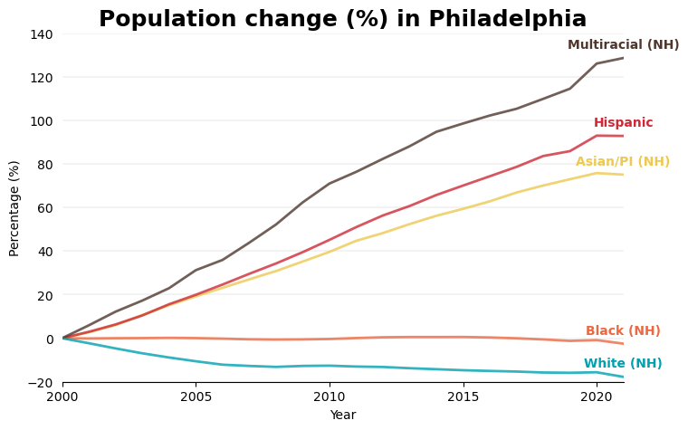
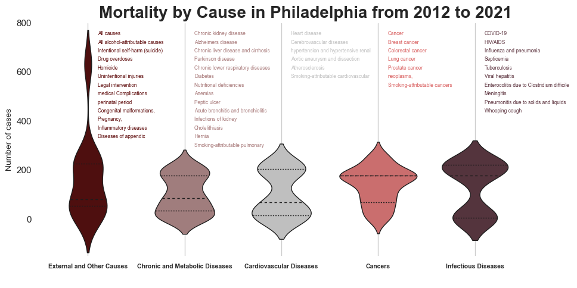

Code
import pandas as pd
from matplotlib import pyplot as plt
import numpy as np
%matplotlib inlineFor Assignment 2, I focused on analyzing data related to population changes in Philadelphia. I created several charts using three tools: Matplotlib, Seaborn, and Altair. Additionally, I built a dashboard using Altair.
First, I visualized overall population data by comparing population change percentages across different races with Matplotlib. Then, I explored causes of mortality in Philadelphia and created related visualizations using Seaborn. For Altair, I made two charts: analyzing the percentage of shooting victims by crime type and analyzing by age. Lastly, I displayed the number of fatalities by age and wound location, displaying in the dashboard.
import pandas as pd
from matplotlib import pyplot as plt
import numpy as np
%matplotlib inline#Load data
alldata = pd.read_csv("./data/Vital_Population_Cty.csv")
alldata.head(3)| OBJECTID | YEAR | GEOGRAPHY_NAME | GEOGRAPHY | SEX | RACE_ETHNICITY | AGE_CATEGORY | COUNT_ | SOURCE | |
|---|---|---|---|---|---|---|---|---|---|
| 0 | 1 | 2000 | Philadelphia | County | All sexes | All races/ethnicities | All ages | 1514563 | Annual County Resident Population Estimates |
| 1 | 2 | 2000 | Philadelphia | County | All sexes | Asian/PI (NH) | All ages | 70128 | Annual County Resident Population Estimates |
| 2 | 3 | 2000 | Philadelphia | County | All sexes | Black (NH) | All ages | 650126 | Annual County Resident Population Estimates |
#Drop unecessary columns
cleandata=alldata.drop(['OBJECTID','GEOGRAPHY_NAME','GEOGRAPHY','SOURCE'],axis=1)#Only choose all ages, all sexes, and years after 2000
AllAgesData = cleandata['AGE_CATEGORY'].isin(["All ages"]) & cleandata['SEX'].isin(["All sexes"])
philaAllAges = cleandata.loc[AllAgesData]
excludebefore2000 = ~philaAllAges['YEAR'].isin([1960,1970,1980,1990])
philaData = philaAllAges.loc[excludebefore2000]#Create plot
color_map = {
"Asian/PI (NH)": "#edc951",
"Black (NH)": "#eb6841",
"Hispanic": "#cc2a36",
"Multiracial (NH)": "#4f372d",
"White (NH)": "#00a0b0"
}
#Create the figure and axes
fig, ax = plt.subplots(figsize=(8, 5))
#Iterate over the data, grouped by race ethinicty
for iterateRaces, group_df in philaData.groupby("RACE_ETHNICITY"):
#Filter out All races
if iterateRaces == 'All races/ethnicities':
continue
group_df = group_df.sort_values("YEAR")
#Year vs. population
x = group_df["YEAR"]
y = group_df["COUNT_"]
#Count percentage
y_percentage = ((y-y.iloc[0])/y.iloc[0])*100
#Plot data line with a specific color
ax.plot(
x, y_percentage,
alpha=0.8,
label=iterateRaces,
linewidth=2,
color=color_map[iterateRaces]
)
#Text
ax.text(
x.iloc[-1],
y_percentage.iloc[-1]+6,
iterateRaces,
color=color_map[iterateRaces],
fontweight="bold",
horizontalalignment="center",
verticalalignment="center"
)
#Format and add a legend
ax.margins(x=0,y=0)
plt.gca().spines['top'].set_visible(False)
plt.gca().spines['right'].set_visible(False)
plt.gca().spines['left'].set_visible(False)
ax.set_title("Population change (%) in Philadelphia", fontsize=18, fontweight="bold")
ax.set_xticks([2000,2005,2010,2015,2020])
ax.set_yticks([-20,0,20,40,60,80,100,120,140])
plt.xlabel("Year", fontsize=10)
plt.ylabel("Percentage (%)", fontsize=10)
plt.tick_params(left = False)
plt.grid(axis='y', linewidth=0.2)
The population graph for Philadelphia illustrates the percentage change by racial/ethnic group each year compare to 2000. Although Philadelphia is known for experiencing overall depopulation, a closer analysis reveals growth in specific ethnic groups. The multiracial non-Hispanic group saw the most significant increase, with a growth of over 120% compared to 2000. Hispanic and Asian populations also experienced notable increases, growing by approximately 90% and 80%, respectively. In contrast, the Black population remained stable between 2000 and 2021, while the White population declined by 20% over the same period. This graph suggests that migration factor may play a role in shaping Philadelphia’s population dynamics. Recently, migration has become a prominent topic in public discussions, particularly in the context of the current election atmosphere.
import seaborn as sns
import numpy as np#Load data
mortalitydata = pd.read_csv("./data/Vital_Mortality_Cty.csv")
#Show the first five row
mortalitydata.head(3)| OBJECTID | YEAR | GEOGRAPHY_NAME | GEOGRAPHY | SEX | RACE_ETHNICITY | AGE_CATEGORY | LEADING_CAUSE_DEATH | METRIC_NAME | METRIC_VALUE | RANK | QUALITY_FLAG | ESTIMATE_TYPE | |
|---|---|---|---|---|---|---|---|---|---|---|---|---|---|
| 0 | 1 | 2021 | Philadelphia | County | All sexes | All races/ethnicities | All ages | All alcohol-attributable causes | alcohol_attributable_deaths | 1235.476033 | NaN | NaN | Preliminary |
| 1 | 2 | 2021 | Philadelphia | County | All sexes | All races/ethnicities | All ages | All alcohol-attributable causes | age_adjusted_alcohol_attributable_mortality_ra... | 73.818445 | NaN | NaN | Preliminary |
| 2 | 3 | 2021 | Philadelphia | County | All sexes | All races/ethnicities | All ages | All alcohol-attributable causes | percent_alcohol_attributable_deaths_out_of_all... | 7.504562 | NaN | NaN | Preliminary |
mortalitydata['LEADING_CAUSE_DEATH'].unique()array(['All alcohol-attributable causes', 'All causes',
'Chronic kidney disease', 'Alzheimers disease',
'Influenza and pneumonia', 'Intentional self-harm (suicide)',
'Chronic liver disease and cirrhosis', 'Parkinson disease',
'Drug overdoses', 'Septicemia', 'Homicide',
'Chronic lower respiratory diseases', 'HIV/AIDS',
'Cerebrovascular diseases',
'Pregnancy, childbirth and the puerperium', 'Diabetes', 'Cancer',
'Heart disease',
'Certain conditions originating in the perinatal period',
'COVID-19', 'Unintentional injuries (excluding drug overdoses)',
'Congenital malformations, deformations and chromosomal abnormalities',
'Breast cancer', 'Colorectal cancer', 'Lung cancer',
'Prostate cancer',
'Essential (primary) hypertension and hypertensive renal disease',
'Anemias', 'Complications of medical and surgical care',
'Infections of kidney', 'Diseases of appendix',
'In situ neoplasms, benign neoplasms and neoplasms of uncertain or unknown behavior',
'Legal intervention', 'Enterocolitis due to Clostridium difficile',
'Inflammatory diseases of female pelvic organs',
'All smoking-attributable causes', 'Smoking-attributable cancers',
'Smoking-attributable cardiovascular and metabolic diseases',
'Smoking-attributable pulmonary diseases',
'Pneumonitis due to solids and liquids', 'Meningitis',
'Tuberculosis', 'Nutritional deficiencies', 'Peptic ulcer',
'Acute bronchitis and bronchiolitis', 'Viral hepatitis',
'Aortic aneurysm and dissection', 'Atherosclerosis', 'Hernia',
'Cholelithiasis and other disorders of gallbladder',
'Whooping cough'], dtype=object)#Make cause of death group
grouped_causes = {
"Cardiovascular Diseases": [
'Heart disease', 'Cerebrovascular diseases',
'Essential (primary) hypertension and hypertensive renal disease',
'Aortic aneurysm and dissection', 'Atherosclerosis',
'Smoking-attributable cardiovascular and metabolic diseases'
],
"Cancers": [
'Cancer', 'Breast cancer', 'Colorectal cancer', 'Lung cancer',
'Prostate cancer', 'In situ neoplasms, benign neoplasms and neoplasms of uncertain or unknown behavior',
'Smoking-attributable cancers'
],
"Infectious Diseases": [
'COVID-19', 'HIV/AIDS', 'Influenza and pneumonia', 'Septicemia',
'Tuberculosis', 'Viral hepatitis', 'Enterocolitis due to Clostridium difficile',
'Meningitis', 'Pneumonitis due to solids and liquids', 'Whooping cough'
],
"Chronic and Metabolic Diseases": [
'Chronic kidney disease', 'Alzheimers disease', 'Chronic liver disease and cirrhosis',
'Parkinson disease', 'Chronic lower respiratory diseases', 'Diabetes',
'Nutritional deficiencies', 'Anemias', 'Peptic ulcer', 'Acute bronchitis and bronchiolitis',
'Infections of kidney', 'Cholelithiasis and other disorders of gallbladder',
'Hernia', 'Smoking-attributable pulmonary diseases'
],
"External and Other Causes": [
'All causes', 'All alcohol-attributable causes', 'Intentional self-harm (suicide)',
'Drug overdoses', 'Homicide', 'Unintentional injuries (excluding drug overdoses)',
'Legal intervention', 'Complications of medical and surgical care',
'Certain conditions originating in the perinatal period',
'Congenital malformations, deformations and chromosomal abnormalities',
'Pregnancy, childbirth and the puerperium', 'Inflammatory diseases of female pelvic organs',
'Diseases of appendix'
]
}df4 = pd.DataFrame(mortalitydata)
#Group by 'Region' and 'Product' and count occurrences, count cause death each year
causeCounts = df4.groupby(['YEAR','LEADING_CAUSE_DEATH']).size().reset_index(name='Count')
#Display the results
causeCounts.head(3)| YEAR | LEADING_CAUSE_DEATH | Count | |
|---|---|---|---|
| 0 | 2012 | All alcohol-attributable causes | 51 |
| 1 | 2012 | All causes | 618 |
| 2 | 2012 | All smoking-attributable causes | 69 |
#Adding group to dataframe
cause_to_group = {}
for group, causes in grouped_causes.items():
for cause in causes:
cause_to_group[cause] = group
#Map the LEADING_CAUSE_DEATH to its corresponding group
causeCounts['causeGroup'] = causeCounts['LEADING_CAUSE_DEATH'].map(cause_to_group)
causeCounts.head(3)| YEAR | LEADING_CAUSE_DEATH | Count | causeGroup | |
|---|---|---|---|---|
| 0 | 2012 | All alcohol-attributable causes | 51 | External and Other Causes |
| 1 | 2012 | All causes | 618 | External and Other Causes |
| 2 | 2012 | All smoking-attributable causes | 69 | NaN |
#Define custom colors for each violin plot
custom_palette = ['#590404','#A67777','#BFBFBF','#D95F5F','#592F3A' ]
sns.set_theme(style="whitegrid")
#Create the violin plot
plt.figure(figsize=(10, 5))
sns.violinplot(data=causeCounts, x='causeGroup', y='Count', palette=custom_palette, inner="quart",
linewidth=1)
#Rotate x labels and adjust the font size
plt.xticks(ha='center', fontsize=7.5, fontweight='bold')
#Set custom y-axis limits
plt.xlim(-0.5,5)
plt.ylim(-150,800)
#Remove y grid lines
plt.grid(False, axis='y')
#Remove y grid lines
plt.grid(True, axis='x')
#Remove chart borders (spines)
for spine in plt.gca().spines.values():
spine.set_visible(False)
#Set labels and title
plt.xlabel(' ')
plt.ylabel('Number of cases', fontsize=10)
plt.title('Mortality by Cause in Philadelphia from 2012 to 2021', fontweight='bold', fontsize=20)
#Create custom text *note:using Matplotlib to get more control
#Text 1
x_position1 = 0.1
y_position1 = 750
custom_info1 = np.copy(grouped_causes['External and Other Causes'])
custom_info1[5] = " ".join(custom_info1[5].split(" ")[:2])
custom_info1[7] = " ".join([custom_info1[7].split(" ")[2], custom_info1[7].split(" ")[0]])
custom_info1[8] = " ".join(custom_info1[8].split(" ")[5:])
custom_info1[9] = " ".join(custom_info1[9].split(" ")[:2])
custom_info1[10] = " ".join(custom_info1[10].split(" ")[:1])
custom_info1[11] = " ".join(custom_info1[11].split(" ")[:2])
for i, line in enumerate(custom_info1):
plt.text(x=x_position1, y=y_position1 - (i * 35), s=line, ha='left', fontsize=6, color='#590404')
#Text 2
x_position2 = 1.1
y_position2 = 750
custom_info2 = np.copy(grouped_causes['Chronic and Metabolic Diseases'])
custom_info2[11] = custom_info2[11].split(" ")[0]
custom_info2[-1] = " ".join(custom_info2[-1].split(" ")[:-1])
for i, line in enumerate(custom_info2):
plt.text(x=x_position2, y=y_position2 - (i * 35), s=line, ha='left', fontsize=6, color='#A67777')
#Text 3
x_position3 = 2.1
y_position3 = 750
custom_info3 = np.copy(grouped_causes['Cardiovascular Diseases'])
custom_info3[2] = " ".join(custom_info3[2].split(" ")[2:6])
custom_info3[-1] = " ".join(custom_info3[-1].split(" ")[:2])
for i, line in enumerate(custom_info3):
plt.text(x=x_position3, y=y_position3 - (i * 35), s=line, ha='left', fontsize=6, color='#BFBFBF')
#Tex 4
x_position4 = 3.1
y_position4 = 750
custom_info4 = np.copy(grouped_causes['Cancers'])
custom_info4[5] = " ".join(custom_info4[5].split(" ")[2:3])
for i, line in enumerate(custom_info4):
plt.text(x=x_position4, y=y_position4 - (i * 35), s=line, ha='left', fontsize=6, color='#D95F5F')
#Text 5
x_position5 = 4.1
y_position5 = 750
custom_info5 = np.copy(grouped_causes['Infectious Diseases'])
for i, line in enumerate(custom_info5):
plt.text(x=x_position5, y=y_position5 - (i * 35), s=line, ha='left', fontsize=6, color='#592F3A')
#Display the plot
plt.tight_layout()
plt.show()
The mortality graph shows the number of deaths across various categories in Philadelphia from 2012 to 2021. Each violin shape represents the distribution of deaths within five categories, with the width of the violin indicating the number of cases at different levels. The dashed line marks the median, while the fine dotted lines represent the quartiles of the data. The “External and Other Causes” category shows a high number of cases, likely because broad categories like “all causes” and “alcohol-attributable causes” are included, resulting in a higher number of cases. The “Cancers” category has the widest violin shape, indicating that the deaths are concentrated around a specific value—approximately 200 cases.
import altair as alt#Load data
shootingdata = pd.read_csv("./data/shootings.csv")
shootingdata.head(3)| the_geom | the_geom_webmercator | objectid | year | dc_key | code | date_ | time | race | sex | ... | location | latino | point_x | point_y | dist | inside | outside | fatal | lat | lng | |
|---|---|---|---|---|---|---|---|---|---|---|---|---|---|---|---|---|---|---|---|---|---|
| 0 | 0101000020E6100000601EB61D28C852C09D6815059305... | 0101000020110F0000104FDF5323E75FC15005EA2F1496... | 15566955 | 2016 | 2.016350e+11 | 2600.0 | 2016-02-14 00:00:00+00 | 07:02:00 | B | F | ... | 400 BLOCK W Fern St | 0.0 | -75.127448 | 40.043549 | 35.0 | 0.0 | 1.0 | 0.0 | 40.043549 | -75.127448 |
| 1 | 0101000020E6100000C5FD89C215CF52C08ED2BE1CEAFB... | 0101000020110F0000CD6B4A0AE8F25FC1FBDF72485E8B... | 15566956 | 2022 | 2.022190e+11 | 100.0 | 2022-03-06 00:00:00+00 | 08:58:00 | B | F | ... | 400 BLOCK N 58TH ST | 0.0 | -75.235703 | 39.968082 | 19.0 | 1.0 | 0.0 | 0.0 | 39.968082 | -75.235703 |
| 2 | 0101000020E61000006D8067B55FCD52C0483FF1CEE7FB... | 0101000020110F000039ED49F7FFEF5FC17799D9BA5B8B... | 15566957 | 2021 | 2.021160e+11 | 400.0 | 2021-10-20 00:00:00+00 | 10:07:00 | B | M | ... | 4200 BLOCK PARRISH ST APT 203 | 0.0 | -75.208967 | 39.968012 | 16.0 | 1.0 | 0.0 | 0.0 | 39.968012 | -75.208967 |
3 rows × 25 columns
#drop unecessary columns
shootingclean=shootingdata.drop(
['the_geom',
'the_geom_webmercator',
'objectid',
'dc_key',
'point_x',
'point_y',
'lat',
'lng'
],axis=1)df = pd.DataFrame(shootingclean)
#Make groups based on the FBI's Crime Reporting (UCR) system
#0100 – 0119: Homicide, 0200 – 0299: Rape, 0300 – 0399: Robbery, 0400 – 0499: Aggravated Assault, 3000 – 3900: Hospital Cases
bins = [99, 199, 299, 399, 499, 2999, 3900]
labels = ['Homicide', 'Rape', 'Robbery', 'Aggravated assault', 'Others', 'Hospital cases']
df['crimeGroup'] = pd.cut(df['code'], bins=bins, labels=labels, right=False)
shootingclean.head(3)| year | code | date_ | time | race | sex | age | wound | officer_involved | offender_injured | offender_deceased | location | latino | dist | inside | outside | fatal | crimeGroup | |
|---|---|---|---|---|---|---|---|---|---|---|---|---|---|---|---|---|---|---|
| 0 | 2016 | 2600.0 | 2016-02-14 00:00:00+00 | 07:02:00 | B | F | 26.0 | Stomach | N | N | N | 400 BLOCK W Fern St | 0.0 | 35.0 | 0.0 | 1.0 | 0.0 | Others |
| 1 | 2022 | 100.0 | 2022-03-06 00:00:00+00 | 08:58:00 | B | F | 31.0 | Chest | N | N | N | 400 BLOCK N 58TH ST | 0.0 | 19.0 | 1.0 | 0.0 | 0.0 | Homicide |
| 2 | 2021 | 400.0 | 2021-10-20 00:00:00+00 | 10:07:00 | B | M | 25.0 | Multiple | N | N | N | 4200 BLOCK PARRISH ST APT 203 | 0.0 | 16.0 | 1.0 | 0.0 | 0.0 | Aggravated assault |
groupCounts = shootingclean['crimeGroup'].value_counts()#Calculate the total count
total_count = groupCounts.sum()
#Calculate percentages
groupPercentage = (groupCounts / total_count) * 100
groupPercentage.round(1)Aggravated assault 66.3
Homicide 24.6
Robbery 4.8
Hospital cases 3.2
Others 1.1
Rape 0.0
Name: crimeGroup, dtype: float64#Calculate crime rate in total 10 years, all years: 2015-2014
rateCrime = groupCounts/10crimeData = {'Count': groupCounts, 'Percentage': groupPercentage.round(2)}
df2 = pd.DataFrame(crimeData)
df2.head(3)| Count | Percentage | |
|---|---|---|
| Aggravated assault | 10673 | 66.34 |
| Homicide | 3953 | 24.57 |
| Robbery | 768 | 4.77 |
#Define custom colors for each violin plot
customPieColor = ['#590404','#A67777','#4B0082','#D95F5F','#2F4F4F','#BFBFBF']
#Create a point selection for the pie chart
brush = alt.selection_point(fields=['crimeGroup'], encodings=['color'])
#Create the data for the pie chart using 'Percentage'
source = pd.DataFrame({
'crimeGroup': df2.index,
'values': df2['Percentage']
})
#Create the base chart with a legend for the crime group categories
base = alt.Chart(source).encode(
alt.Theta("values:Q").stack(True),
alt.Radius("values:Q").scale(type="sqrt", zero=True, rangeMin=20),
color=alt.condition(
brush,
alt.Color("crimeGroup:N",
scale=alt.Scale(range=customPieColor),
legend=alt.Legend(title="Crime Type")),
alt.value('lightgray')
)
)
#Create the pie chart with arcs
c1 = base.mark_arc(innerRadius=20, stroke="#fff").add_params(brush).properties(width=350, height=350)
#Create text marks for percentages with a percentage symbol, initially hidden and shown only on hover
c2 = base.mark_text(radiusOffset=45, fontWeight="bold").encode(
text=alt.Text("values:Q", format=".2f"),
opacity=alt.condition(brush, alt.value(1), alt.value(0))
).transform_calculate(
label="datum.values + '%'"
).encode(
text='label:N'
)
#Combine the arc and text
chart = c1 + c2
#Add tooltip for interactivity on hover
tooltip = alt.Tooltip('crimeGroup:N', title='Crime Group')
#Combine the arc and text with tooltips
chart = chart.encode(tooltip=tooltip)
#Add a title to the chart
chart = chart.properties(
title={
"text": "Shooting Victims Percentage by Crime Type",
"dx": 50,
"dy": -15,
"fontSize": 20,
}
)
#Display the chart
chartThe chart above illustrates the percentage of shooting victims across various crime categories in Philadelphia between 2015 and 2024. Aggravated assault accounts for approximately 66.34%, making it the most prevalent crime associated with shootings. Homicide is the second most significant, representing 24.57%. Other crime types contribute much smaller percentages compared to these two major categories. This chart indicates that gun violence in Philadelphia is a serious concern. The next graph will provide further details by examining shooting victims based on age.
df3 = pd.DataFrame(shootingclean)
#Count
raceCounts = df3.groupby(['year','age']).size().reset_index(name='Count')
#Display the results
raceCounts.head(3)| year | age | Count | |
|---|---|---|---|
| 0 | 2015 | 1.0 | 1 |
| 1 | 2015 | 3.0 | 1 |
| 2 | 2015 | 6.0 | 1 |
#Brush for selection
brush2 = alt.selection_interval()
#Scatter Plot
points = alt.Chart(raceCounts).mark_circle().encode(
x=alt.X('year:Q', scale=alt.Scale(domain=[2014, 2025]),
axis=alt.Axis(format='.0f', grid=False)),
y=alt.Y('age:Q',
axis=alt.Axis(domain=False, ticks=False, grid=False)),
size=alt.Size('Count:Q',
legend=alt.Legend(
title="",
symbolType='circle',
orient='top',
offset=-10
)),
color=alt.condition(brush2, alt.value('red'), alt.value('grey')),
opacity=alt.condition(brush2, alt.value(0.3), alt.value(0.2))
).add_params(brush2)
#Add a solid black line at age 21
line_at_age_21 = alt.Chart(pd.DataFrame({'age': [21]})).mark_rule(color='black', opacity = 0.5,strokeWidth=3).encode(
y='age:Q'
)
#Add text to the right of the line
text_below_line = alt.Chart(pd.DataFrame({'age': [21], 'text': ['Age 21']})).mark_text(
align='left',
baseline='middle',
dy=10,
fontWeight='bold'
).encode(
y='age:Q',
x=alt.value(280),
text='text:N'
)
#Base chart for data tables
ranked_text = alt.Chart(raceCounts).mark_text(align='right', color='black').encode(
y=alt.Y('row_number:O').axis(None)
).transform_filter(
brush2
).transform_window(
row_number='row_number()'
).transform_filter(
alt.datum.row_number < 17
)
#Data Tables
yeartable = ranked_text.encode(text='age:N').properties(
title=alt.Title(text='Age', align='right', color ='black')
)
agetable = ranked_text.encode(text='year:N').properties(
title=alt.Title(text='Year', align='right', color ='black')
)
text = alt.hconcat(yeartable, agetable)
#Build chart
alt.hconcat(
points + line_at_age_21 + text_below_line,
text
).resolve_legend(
color="independent"
).configure_view(
stroke=None
).properties(
title={
"text": ["Shooting Victims by Age"],
"anchor": "middle",
"align": "left",
"dx": -170,
"dy": -7,
"fontSize": 30,
"fontWeight": "bold",
}
)The chart above displays the number of shooting victims by age from 2015 to 2024. The size of each red dot represents the number of victims, while the black line marks age 21, the minimum legal age to obtain a gun. The results show that the highest concentration of victims is clustered around teenagers and individuals in their early twenties. The pattern of victims remains consistent each year, resembling a “pine tree” shape. What is particularly striking is the consistency of this pattern over the years, with a larger “lower canopy” indicating that more young people are commonly affected by shootings. This raises curiosity about how the pattern might look on a larger scale, such as at the state or national level, and how the data on suspected gun shooters might compare.
shootingclean['wound'].unique()array(['Stomach', 'Chest', 'Multiple', 'Head', 'Leg', 'Abdomen', 'Back',
'Groin', 'Shoulder', 'Hand', 'Multiple/Head', 'Hip', 'Foot', 'Arm',
'back', 'Buttocks', 'Neck', 'Wrist', 'Ankle', 'Unknown', 'ARM',
'leg', 'LEG', 'MULTI', 'HEAD', 'buttocks', 'head', 'arm', nan,
'Pelvis', 'CHEST', 'THIGH', 'SHOULDER', 'hand', 'chest', 'NECK',
'ANKLE', 'foot', 'ankle', 'MULTIPLE/HEAD', 'ABDOMEN', 'stomach',
'MULTIPLE', 'abdomen', 'LEGS', 'shoulder', 'FOOT', 'pelvis',
'BACK', 'hip', 'neck', 'STOMACH', 'KNNES', 'groin', 'HAND',
'Multiple/HEAD', 'BUTTOCKS', 'multi', 'TORSO'], dtype=object)#Create categories
headParts = ['Head', 'head', 'HEAD', 'Neck', 'neck', 'NECK', 'Multiple/Head', 'MULTIPLE/HEAD', 'Multiple/HEAD']
upperBodyParts = ['Stomach', 'stomach', 'STOMACH', 'Abdomen', 'abdomen', 'ABDOMEN', 'Chest', 'chest', 'CHEST',
'Back', 'back', 'BACK', 'Groin', 'groin', 'Shoulder', 'shoulder', 'SHOULDER', 'Buttocks',
'buttocks', 'BUTTOCKS', 'Arm', 'arm', 'ARM', 'Wrist', 'Hand', 'hand', 'HAND', 'TORSO',
'Pelvis', 'pelvis', 'Hip', 'hip', 'MULTI', 'Multiple', 'Unknown', 'nan', 'MULTIPLE', 'multi']
lowerBodyParts = ['Leg', 'leg', 'LEG', 'Legs', 'LEGS', 'Foot', 'foot', 'FOOT', 'Ankle', 'ankle', 'ANKLE',
'THIGH', 'KNNES']#make all data as Upper Body by default, assuming multple, nan, unknown, etc are upper body
shootingclean['bodyParts'] = "Upper Body"#Add two other categories categories: Head and Lowe Body
head_rows = shootingclean['wound'].isin(headParts)
shootingclean.loc[head_rows, 'bodyParts'] = 'Head'
upperBody_rows = shootingclean['wound'].isin(upperBodyParts)
shootingclean.loc[upperBody_rows, 'bodyParts'] = 'Upper Body'
lowerBody_rows = shootingclean['wound'].isin(lowerBodyParts)
shootingclean.loc[lowerBody_rows, 'bodyParts'] = 'Lower Body'
shootingclean.head(3)| year | code | date_ | time | race | sex | age | wound | officer_involved | offender_injured | offender_deceased | location | latino | dist | inside | outside | fatal | crimeGroup | bodyParts | |
|---|---|---|---|---|---|---|---|---|---|---|---|---|---|---|---|---|---|---|---|
| 0 | 2016 | 2600.0 | 2016-02-14 00:00:00+00 | 07:02:00 | B | F | 26.0 | Stomach | N | N | N | 400 BLOCK W Fern St | 0.0 | 35.0 | 0.0 | 1.0 | 0.0 | Others | Upper Body |
| 1 | 2022 | 100.0 | 2022-03-06 00:00:00+00 | 08:58:00 | B | F | 31.0 | Chest | N | N | N | 400 BLOCK N 58TH ST | 0.0 | 19.0 | 1.0 | 0.0 | 0.0 | Homicide | Upper Body |
| 2 | 2021 | 400.0 | 2021-10-20 00:00:00+00 | 10:07:00 | B | M | 25.0 | Multiple | N | N | N | 4200 BLOCK PARRISH ST APT 203 | 0.0 | 16.0 | 1.0 | 0.0 | 0.0 | Aggravated assault | Upper Body |
df5 = pd.DataFrame(shootingclean)
#Make groups based on UCR systemc
bins = [0, 11, 21, 31, 41, 51, 61, 71, 120]
labels = ['0-10', '11-20', '21-30', '31-40', '41-50', '51-60','61-70','>70']
df5['ageGroup'] = pd.cut(df5['age'], bins=bins, labels=labels, right=False)
shootingclean.head(3)| year | code | date_ | time | race | sex | age | wound | officer_involved | offender_injured | offender_deceased | location | latino | dist | inside | outside | fatal | crimeGroup | bodyParts | ageGroup | |
|---|---|---|---|---|---|---|---|---|---|---|---|---|---|---|---|---|---|---|---|---|
| 0 | 2016 | 2600.0 | 2016-02-14 00:00:00+00 | 07:02:00 | B | F | 26.0 | Stomach | N | N | N | 400 BLOCK W Fern St | 0.0 | 35.0 | 0.0 | 1.0 | 0.0 | Others | Upper Body | 21-30 |
| 1 | 2022 | 100.0 | 2022-03-06 00:00:00+00 | 08:58:00 | B | F | 31.0 | Chest | N | N | N | 400 BLOCK N 58TH ST | 0.0 | 19.0 | 1.0 | 0.0 | 0.0 | Homicide | Upper Body | 31-40 |
| 2 | 2021 | 400.0 | 2021-10-20 00:00:00+00 | 10:07:00 | B | M | 25.0 | Multiple | N | N | N | 4200 BLOCK PARRISH ST APT 203 | 0.0 | 16.0 | 1.0 | 0.0 | 0.0 | Aggravated assault | Upper Body | 21-30 |
#Group
woundCounts = shootingclean.groupby(['bodyParts','ageGroup']).size().reset_index(name='Count')
#Display the results
woundCounts.head(3)| bodyParts | ageGroup | Count | |
|---|---|---|---|
| 0 | Head | 0-10 | 20 |
| 1 | Head | 11-20 | 414 |
| 2 | Head | 21-30 | 825 |
#Create an interactive selection for body parts (acting as clickable elements)
dataSelection = alt.selection_point(
fields=['bodyParts'],
on="click",
empty=True
)
chart3 = (
alt.Chart(woundCounts)
.mark_bar()
.encode(
x=alt.X("Count:Q",title="Number of victims"),
y=alt.Y("ageGroup:N",title="Age"),
color=alt.condition(
dataSelection,
alt.Color(
"bodyParts:N",
scale=alt.Scale(
domain=['Head', 'Upper Body', 'Lower Body'],
range=['#590404','#D95F5F','#A67777']
),
legend=None,
),
alt.value("lightgray")
)
)
.properties(width=800)
.add_params(dataSelection)
)
chart1 = (
alt.Chart(woundCounts)
.mark_bar()
.encode(
x=alt.X("ageGroup:N", axis=alt.Axis(labelAngle=0),title="Age"),
y=alt.Y("bodyParts:N", sort=['Head', 'Upper Body', 'Lower Body'],title=""),
color=alt.condition(
dataSelection,
alt.Color(
"Count:Q",
scale=alt.Scale(
range=['#E1B799', '#EC8461', '#FF2828', '#D71B1B', '#A90100', '#560505']
),
legend=alt.Legend(
title="Victims",
titleFontSize=12,
labelFontSize=10,
symbolSize=10,
offset=-140
)
),
alt.value("lightgray")
),
)
.properties(width=300, height=180)
.add_params(dataSelection)
)
#Create a DataFrame with only one data point
dataPerson = pd.DataFrame([{'bodyParts': 'Whole Body'}])
#Sample data for body parts: Head, Body, and Legs
data_parts = pd.DataFrame({
'bodyParts': ['Head', 'Upper Body', 'Lower Body'],
'x': [1, 1, 1],
'y': [3, 2, 1],
'Count': [1, 1, 1]
})
#SVG path for a person shape
person = (
"M1.3 -1.7h-0.8c0.3 -0.2 0.6 -0.5 0.6 -0.9c0 -0.6 "
"-0.4 -1 -1 -1c-0.6 0 -1 0.4 -1 1c0 0.4 0.2 0.7 0.6 "
"0.9h-0.8c-0.4 0 -0.7 0.3 -0.7 0.6v1.9c0 0.3 0.3 0.6 "
"0.6 0.6h0.2c0 0 0 0.1 0 0.1v1.9c0 0.3 0.2 0.6 0.3 "
"0.6h1.3c0.2 0 0.3 -0.3 0.3 -0.6v-1.8c0 0 0 -0.1 0 "
"-0.1h0.2c0.3 0 0.6 -0.3 0.6 -0.6v-2c0.2 -0.3 -0.1 "
"-0.6 -0.4 -0.6z"
)
#Chart for the person shape
person_chart = alt.Chart(dataPerson).mark_point(
filled=True,
size=1500,
color='grey'
).encode(
alt.ShapeValue(person)
)
#Create the bar chart for head, body, and legs
parts_chart = alt.Chart(data_parts).mark_bar(
size=100,
fillOpacity=0,
strokeWidth=2
).encode(
x=alt.X('x:O', axis=None),
y=alt.Y('y:O', axis=None, sort='descending', bandPosition=0),
stroke=alt.condition(
dataSelection,
alt.Color(
"bodyParts:N",
scale=alt.Scale(
domain=['Head', 'Upper Body', 'Lower Body'],
range=['#590404','#D95F5F','#A67777']
),
legend=None
),
alt.value('lightgray'),
),
strokeOpacity=alt.condition(
dataSelection,
alt.value(1),
alt.value(0)
),
tooltip=['bodyParts']
).properties(
width=80,
height=180
).add_params(
dataSelection
)
#Combine all the charts: person, head, body, and legs
chart2 = person_chart + parts_chart
#Combine chart1 and chart2 horizontally
horizontal_concat = alt.hconcat(chart1, chart2, spacing=80).properties(
title={
"text": ["Click the corresponding body part to specify data."],
"anchor": "middle",
"align": "left",
"dx": 285,
"dy": 170,
"fontSize": 12,
"fontWeight": "normal",
}
)
#Vertically combine the horizontal_concat and chart3
dashboard = alt.vconcat(horizontal_concat, chart3).properties(
title={
"text": ["Philadelphia's","Shooting Victims","2015-2024"],
"anchor": "middle",
"align": "left",
"dx": 110,
"dy": 130,
"fontSize": 41,
"fontWeight": "bold",
}
)
#Display the concatenated charts
dashboardThe dashboard provides an overview of Philadelphia’s shooting victims, categorized by age and wound location. Wound locations are grouped into three categories: head, upper body, and lower body. In the heatmap, darker shades indicate a higher number of victims, with the upper body for victims aged 21-30 being the most impacted group.